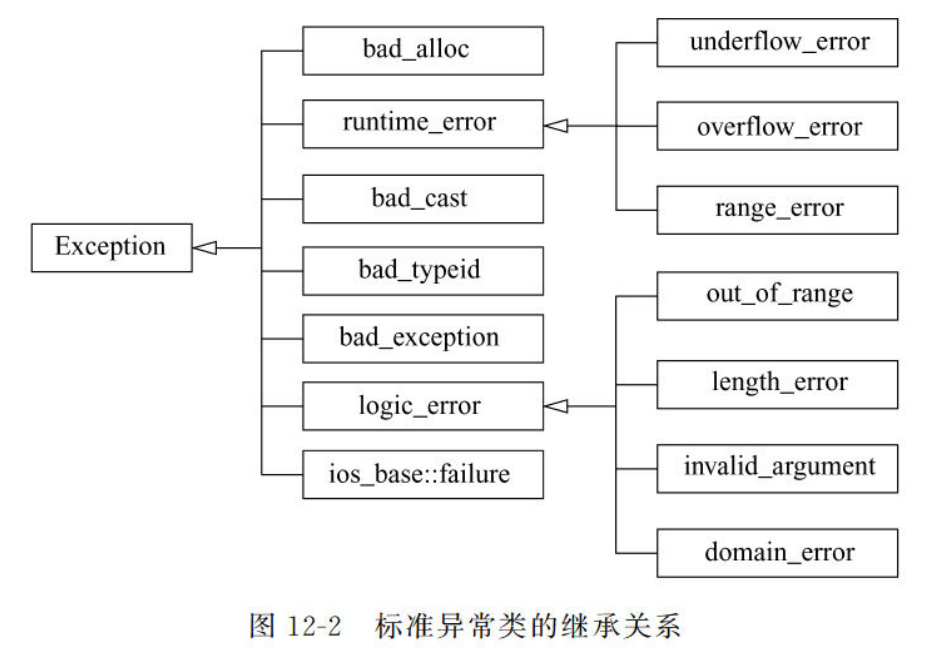
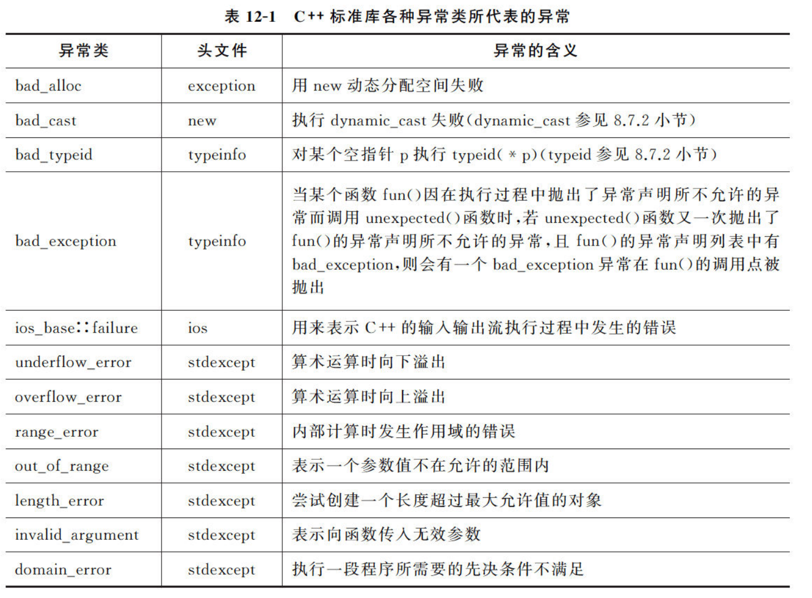

05 多文件与工程
一、多文件
1.1 一般结构：
- head：类定义文件（*.h）
- resource：类实现文件（*.cpp）
- source：类使用文件（*.cpp，主函数文件）
1.2 文件间交互：
1.2.1 #include命令
#include "文件名"的方式，将文件名所指的文件包含到当前程序内
1.2.2 外部变量和外部函数
使用其他文件中的变量，用extern关键字声明
函数同理1.2.3 命名空间
将程序库的名称封装起来，相当于在越来越多的的关键字和变量中，建立起围墙，解决重名的问题。
声明：
使用namespace A{}即可声明一个命名空间A，与其他命名空间相隔。
命名空间可以嵌套，即在A内可以声明命名空间B，通过多层范围解析即可。
使用：
在命名空间外部使用空间内变量或函数时，可以使用using指令。
1.3 编译预处理
- 使用#include
- 使用#define 和#undef
2.1 主要功能已被c++新语法取代
2.2 目前常用于定义空符号#define MYHEAD_H，与条件编译指令一起使用 - 使用#if, #elif, #else
3.1 在满足一些条件的时候才参与编译，可以在不同编译条件下产生不同的编译代码。
因为头文件可能会被多个文件以#include方式包含，在编译时出现错误，所以要使用条件编译指令.
#pragma once已被引入大多数编译器，成为广泛做法，但仍未成为标准。
//head.h
#ifndef HEAD_H //先判断空符号HEAD_H是否被定义过，若已被定义，则不需再次编译头文件。
#define HEAD_H //若未定义则头文件尚未编译过，开始编译
class ...{
...
}
#endif
二、代码的编译、连接与执行过程
2.1 编译
编译：经过编译系统的处理，生成目标文件的过程叫做编译。编译对一个个源文件分别处理，编译单元互不影响，每个生成一个目标文件。 目标文件（.o/.obj）：主要描述程序在运行过程中需要放在内存中的内容，包括代码段和数据段。其中，代码段（.txt）将高级语言变为可执行的机器语言。数据段则包括已初始化的数据段（.data），未初始化的（.bss），按其生存期放入不同内存空间。数据段还包含符号表，即标识符与内存地址的关联。
2.2 连接
将目标文件之间相互连接，同时将标准库连接，同时按照符号表将标识符与地址对应起来，所有可执行文件都是有效地址。
2.3 执行
三、异常处理
程序出现错误是可以预料且不可避免地，应该让程序具有容错能力。
3.1 异常处理的实现
3.1.1 try, catch, throw语句：
try内执行可能产生异常的语句，如果发生异常则使用throw语句“扔出”错误，然后catch语句按顺序查找与throw相匹配的类型，执行catch内的语句。
#include<iostream>
using namespace std;
int divide(int a, int b) {
if (b == 0) {
throw a;
}
else {
return a / b;
}
}
void main() {
try {
cout << divide(5, 3) << endl;
cout << divide(2, 0) << endl;
}
catch (int e) {
cout << e << endl;
}
}
- try内没有报错，即没有throw的情况下，会跳过catch的执行
- 没有与throw类型相匹配的catch时，将返回到函数调用点，重新发出throw，寻找匹配的catch，直到main函数结束执行
- catch匹配的条件：类型一致/类型的引用/公共基类/公共基类的引用/指针类型且前到后可转换
3.1.2 异常接口声明
未使得程序可读，在函数声明时应声明异常的可能类型。
3.1.3 异常处理中的析构
如果程序在try中发生了异常，则程序需要离开try转而到其他函数，所以需要做好结束对象前的清理工作。即按照与构造相反的顺序调用析构函数，清理内存。
3.2 标准库异常处理
标准库可以避免内存泄漏，安全处理异常，不破坏容器。  